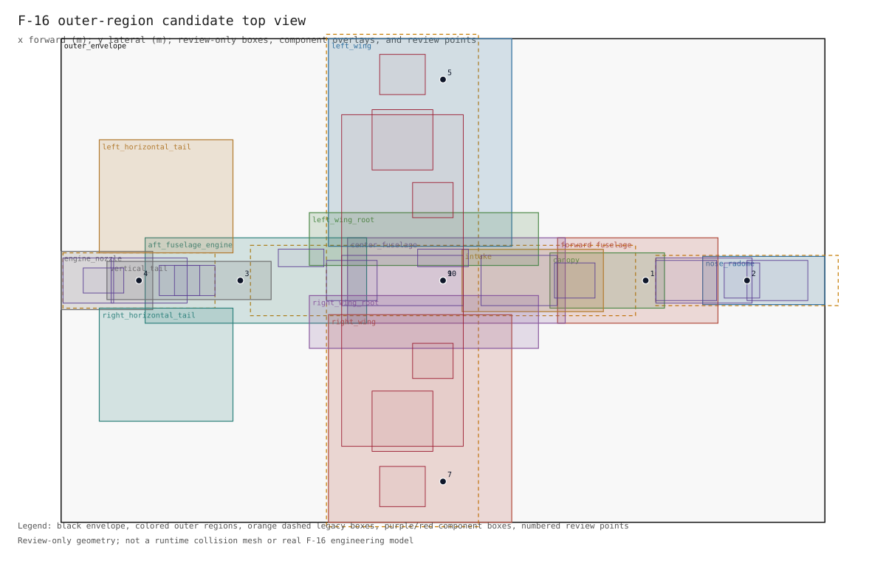
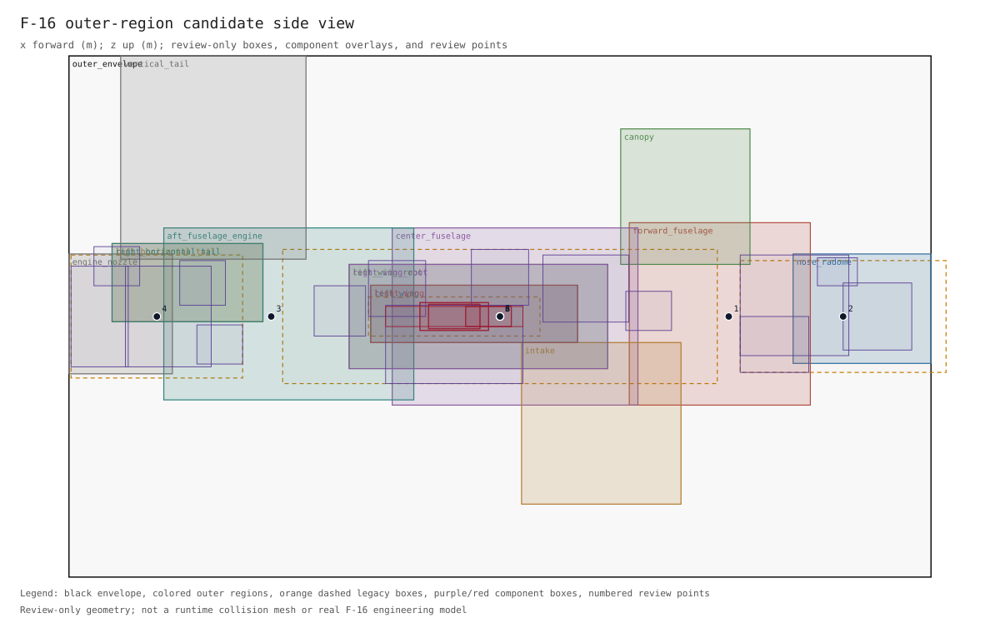
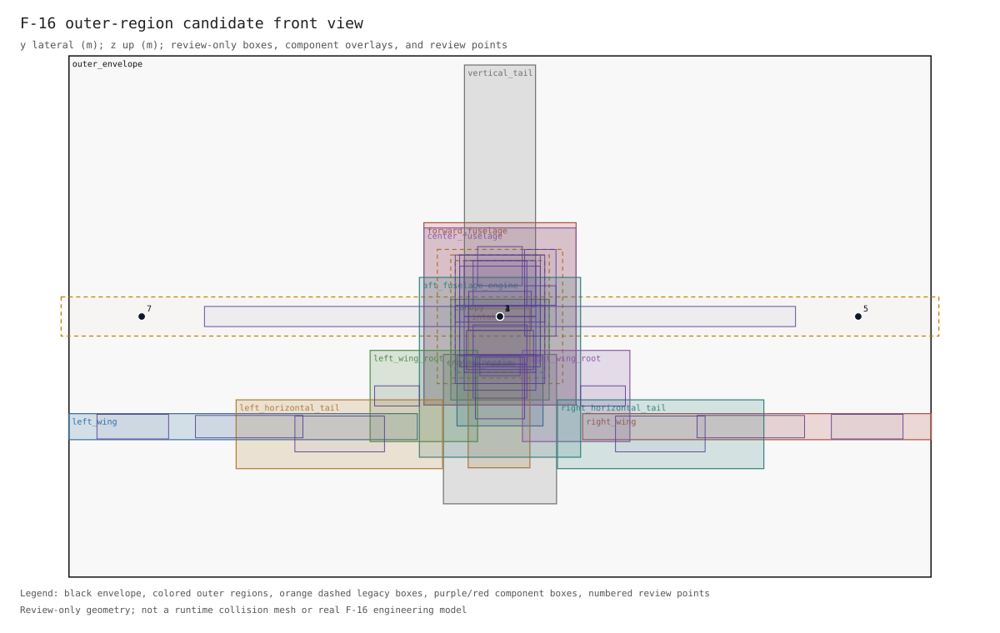
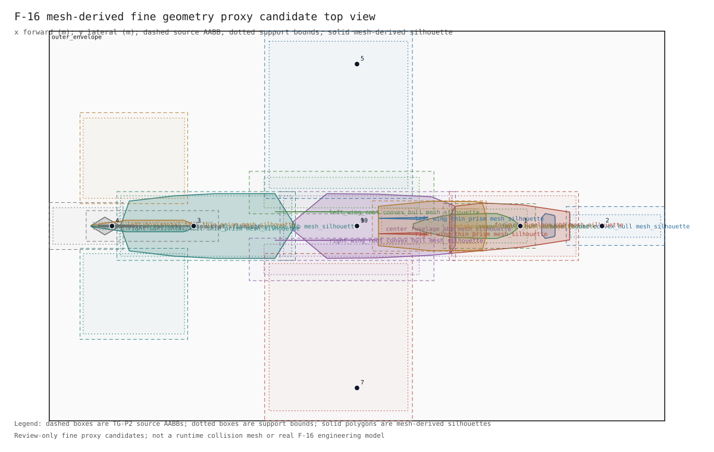
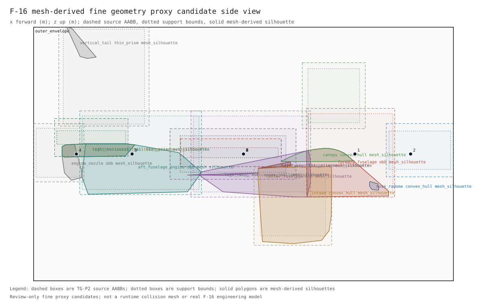
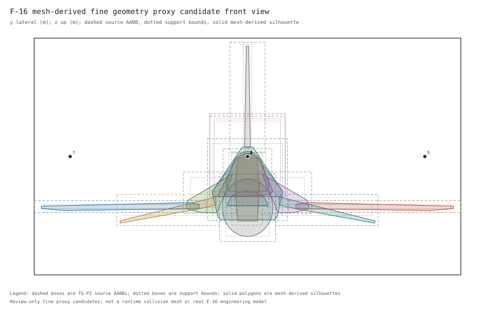
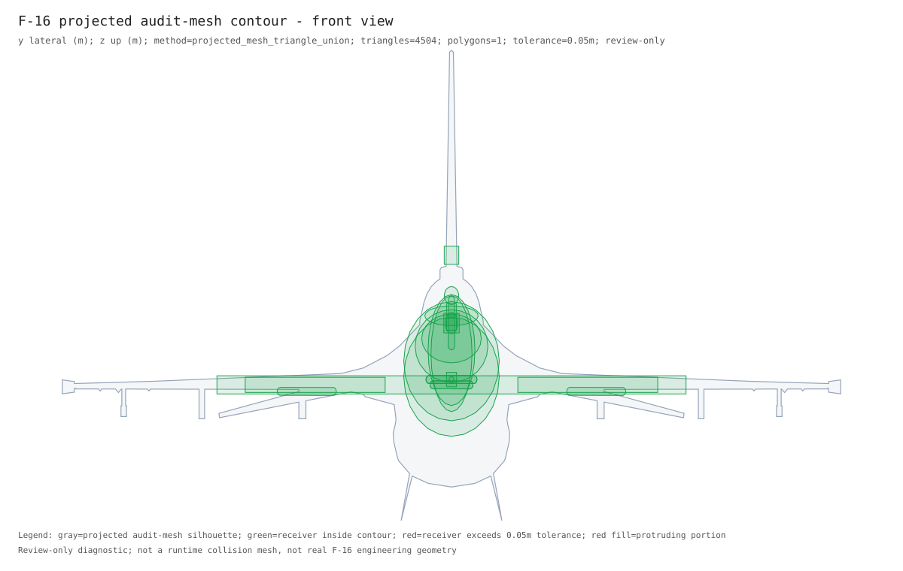

F-16 Target Geometry Review Packet
Review-only geometry. This packet is not a runtime collision mesh, not a real F-16 engineering model, and not a real-weapon lethality claim.
Three-View Overlay



Fine Geometry Proxy Overlay
TG-P6 review-only proxy candidates. Dashed rectangles show source AABB regions, dotted rectangles show support bounds, and solid polygons show mesh-derived silhouettes from filtered audit-glTF vertices.
Open the per-region human review dashboard.
Open the visual human review triage.
Open isolated component review views.
Open isolated semantic damage geometry views.
Open 14 parent-child component layout views.



Fine Proxy Distance Deltas
| point | source_region | source_dist_m | fine_region | fine_kind | fine_dist_m | delta_m |
|---|---|---|---|---|---|---|
| nose_axis_4m | forward_fuselage | 0.0 | canopy | convex_hull | 0.0 | 0.0 |
| nose_axis_6m | nose_radome | 0.349524 | nose_radome | convex_hull | 0.437604 | 0.08808 |
| tail_axis_4m | aft_fuselage_engine | 0.0 | aft_fuselage_engine | obb | 0.0 | 0.0 |
| tail_axis_6m | vertical_tail | 0.088577 | vertical_tail | thin_prism | 0.131783 | 0.043206 |
| right_beam_4m | right_wing | 0.868724 | right_wing | thin_prism | 0.943168 | 0.074444 |
| right_beam_6m | right_wing | 1.468711 | right_wing | thin_prism | 1.702881 | 0.23417 |
| left_beam_4m | left_wing | 0.868724 | left_wing | thin_prism | 0.943168 | 0.074444 |
| left_beam_6m | left_wing | 1.468704 | left_wing | thin_prism | 1.70287 | 0.234166 |
| above_4m | center_fuselage | 3.207745 | center_fuselage | obb | 3.302816 | 0.095071 |
| below_4m | left_wing_root | 2.892347 | left_wing_root | convex_hull | 3.024721 | 0.132374 |
Semantic Damage Geometry Volumes
Parse-ready outer-shell volume component candidates generated from TG-P6 mesh proxies and TG-P6 surface handoffs. These are not activated in the current runtime damage model.
Open isolated semantic volume views.
| semantic_component | outer_region | volume_role | primitive | direct_receivers | cross_region_receivers | handoff_status | runtime_status |
|---|---|---|---|---|---|---|---|
| semantic_nose_radome_volume | nose_radome | radome_volume | convex_hull | apg68_radar_array,iff_interrogator | direct_receivers_parse_ready | runtime_schema_parse_ready_candidate_not_activated | |
| semantic_forward_fuselage_skin_volume | forward_fuselage | forward_fuselage_skin_volume | obb | cockpit_crew_station,inertial_navigation_unit,nose_avionics_bay | direct_receivers_parse_ready | runtime_schema_parse_ready_candidate_not_activated | |
| semantic_canopy_surface_volume | canopy | canopy_surface_volume | convex_hull | dedicated_canopy_surface_component | direct_receivers_parse_ready | runtime_schema_parse_ready_candidate_not_activated | |
| semantic_center_fuselage_skin_volume | center_fuselage | center_fuselage_skin_volume | obb | center_fuselage_fuel_cell,data_link_terminal,flight_control_computer,mission_computer | wing_spar_center | direct_receivers_parse_ready_cross_region_receivers_held | runtime_schema_parse_ready_candidate_not_activated |
| semantic_intake_lip_and_duct_volume | intake | intake_lip_and_duct_volume | convex_hull | dedicated_intake_lip_or_duct_component | engine_core | direct_receivers_parse_ready_cross_region_receivers_held | runtime_schema_parse_ready_candidate_not_activated |
| semantic_aft_engine_bay_skin_volume | aft_fuselage_engine | aft_engine_bay_skin_volume | obb | electrical_power_bus,engine_fuel_control_unit,tail_hydraulic_pump | engine_core | direct_receivers_parse_ready_cross_region_receivers_held | runtime_schema_parse_ready_candidate_not_activated |
| semantic_engine_nozzle_volume | engine_nozzle | engine_nozzle_volume | obb | afterburner_nozzle | engine_core | direct_receivers_parse_ready_cross_region_receivers_held | runtime_schema_parse_ready_candidate_not_activated |
| semantic_left_wing_skin_volume | left_wing | left_wing_skin_volume | thin_prism | left_aileron_actuator,left_wing_fuel_cell | wing_spar_center | direct_receivers_parse_ready_cross_region_receivers_held | runtime_schema_parse_ready_candidate_not_activated |
| semantic_right_wing_skin_volume | right_wing | right_wing_skin_volume | thin_prism | right_aileron_actuator,right_wing_fuel_cell | wing_spar_center | direct_receivers_parse_ready_cross_region_receivers_held | runtime_schema_parse_ready_candidate_not_activated |
| semantic_left_wing_root_fairing_volume | left_wing_root | left_wing_root_fairing_volume | convex_hull | left_leading_edge_flap_actuator | wing_spar_center | direct_receivers_parse_ready_cross_region_receivers_held | runtime_schema_parse_ready_candidate_not_activated |
| semantic_right_wing_root_fairing_volume | right_wing_root | right_wing_root_fairing_volume | convex_hull | right_leading_edge_flap_actuator | wing_spar_center | direct_receivers_parse_ready_cross_region_receivers_held | runtime_schema_parse_ready_candidate_not_activated |
| semantic_left_horizontal_tail_skin_volume | left_horizontal_tail | left_horizontal_tail_skin_volume | thin_prism | left_horizontal_tail_actuator_or_surface_component | direct_receivers_parse_ready | runtime_schema_parse_ready_candidate_not_activated | |
| semantic_right_horizontal_tail_skin_volume | right_horizontal_tail | right_horizontal_tail_skin_volume | thin_prism | right_horizontal_tail_actuator_or_surface_component | direct_receivers_parse_ready | runtime_schema_parse_ready_candidate_not_activated | |
| semantic_vertical_tail_skin_volume | vertical_tail | vertical_tail_skin_volume | thin_prism | rudder_actuator | direct_receivers_parse_ready | runtime_schema_parse_ready_candidate_not_activated |
Internal Component Prior Geometry
Review-only synthetic receiver geometry generated from simple priors such as sphere, cylinder, capsule, and ellipsoid, then constrained inside parent shell support bounds.
Open isolated internal component prior views.
| component | system | prior_shape | axis | bound_region | constraint_regions | constraint_status | pre_outside | post_outside | runtime_status |
|---|---|---|---|---|---|---|---|---|---|
| apg68_radar_array | radar | ellipsoid | nose_radome | nose_radome,forward_fuselage | already_inside_whole_airframe | 0.0 | 0.0 | runtime_schema_candidate_not_activated_prior_shape_review_required | |
| cockpit_crew_station | cockpit | ellipsoid | forward_fuselage | canopy,forward_fuselage | placed_inside_airframe_exceeds_parent_shell_review | 0.0 | 0.0 | runtime_schema_candidate_not_activated_prior_shape_review_required | |
| dedicated_canopy_surface_component | cockpit | ellipsoid | canopy | canopy | already_inside_whole_airframe | 0.0 | 0.0 | runtime_schema_candidate_not_activated_prior_shape_review_required | |
| nose_avionics_bay | avionics | obb | forward_fuselage | forward_fuselage | already_inside_whole_airframe | 0.0 | 0.0 | runtime_schema_candidate_not_activated_prior_shape_review_required | |
| iff_interrogator | avionics | ellipsoid | nose_radome | nose_radome | placed_inside_airframe_exceeds_parent_shell_review | 0.0 | 0.0 | runtime_schema_candidate_not_activated_prior_shape_review_required | |
| center_fuselage_fuel_cell | fuel | ellipsoid | center_fuselage | center_fuselage | placed_inside_airframe_exceeds_parent_shell_review | 0.0 | 0.0 | runtime_schema_candidate_not_activated_prior_shape_review_required | |
| mission_computer | avionics | obb | center_fuselage | center_fuselage | already_inside_whole_airframe | 0.0 | 0.0 | runtime_schema_candidate_not_activated_prior_shape_review_required | |
| data_link_terminal | data_link | obb | center_fuselage | center_fuselage | placed_inside_airframe_exceeds_parent_shell_review | 0.0 | 0.0 | runtime_schema_candidate_not_activated_prior_shape_review_required | |
| flight_control_computer | flight_control | obb | center_fuselage | center_fuselage | already_inside_whole_airframe | 0.0 | 0.0 | runtime_schema_candidate_not_activated_prior_shape_review_required | |
| inertial_navigation_unit | navigation | ellipsoid | forward_fuselage | forward_fuselage | already_inside_whole_airframe | 0.0 | 0.0 | runtime_schema_candidate_not_activated_prior_shape_review_required | |
| dedicated_intake_lip_or_duct_component | engine | ellipsoid | intake | intake | already_inside_whole_airframe | 0.0 | 0.0 | runtime_schema_candidate_not_activated_prior_shape_review_required | |
| electrical_power_bus | avionics | capsule | x | aft_fuselage_engine | aft_fuselage_engine | already_inside_whole_airframe | 0.0 | 0.0 | runtime_schema_candidate_not_activated_prior_shape_review_required |
| engine_core | engine | capsule | x | aft_fuselage_engine | aft_fuselage_engine,engine_nozzle,intake | cross_region_prior_constrained_inside_airframe_held | 0.0 | 0.0 | runtime_schema_candidate_not_activated_prior_shape_review_required |
| afterburner_nozzle | engine | ellipsoid | engine_nozzle | engine_nozzle,aft_fuselage_engine | already_inside_whole_airframe | 0.0 | 0.0 | runtime_schema_candidate_not_activated_prior_shape_review_required | |
| tail_hydraulic_pump | hydraulic | obb | aft_fuselage_engine | aft_fuselage_engine | placed_inside_airframe_exceeds_parent_shell_review | 0.0 | 0.0 | runtime_schema_candidate_not_activated_prior_shape_review_required | |
| engine_fuel_control_unit | engine | obb | aft_fuselage_engine | aft_fuselage_engine | already_inside_whole_airframe | 0.0 | 0.0 | runtime_schema_candidate_not_activated_prior_shape_review_required | |
| rudder_actuator | flight_control | capsule | z | vertical_tail | vertical_tail | already_inside_whole_airframe | 0.0 | 0.0 | runtime_schema_candidate_not_activated_prior_shape_review_required |
| left_horizontal_tail_actuator_or_surface_component | flight_control | capsule | y | left_horizontal_tail | left_horizontal_tail | already_inside_whole_airframe | 0.0 | 0.0 | runtime_schema_candidate_not_activated_prior_shape_review_required |
| right_horizontal_tail_actuator_or_surface_component | flight_control | capsule | y | right_horizontal_tail | right_horizontal_tail | already_inside_whole_airframe | 0.0 | 0.0 | runtime_schema_candidate_not_activated_prior_shape_review_required |
| left_wing_fuel_cell | fuel | ellipsoid | left_wing | left_wing | already_inside_whole_airframe | 0.0 | 0.0 | runtime_schema_candidate_not_activated_prior_shape_review_required | |
| right_wing_fuel_cell | fuel | ellipsoid | right_wing | right_wing | already_inside_whole_airframe | 0.0 | 0.0 | runtime_schema_candidate_not_activated_prior_shape_review_required | |
| left_aileron_actuator | flight_control | capsule | y | left_wing | left_wing | already_inside_whole_airframe | 0.0 | 0.0 | runtime_schema_candidate_not_activated_prior_shape_review_required |
| right_aileron_actuator | flight_control | capsule | y | right_wing | right_wing | already_inside_whole_airframe | 0.0 | 0.0 | runtime_schema_candidate_not_activated_prior_shape_review_required |
| wing_spar_center | wings | capsule | y | center_fuselage | center_fuselage,left_wing_root,right_wing_root,left_wing,right_wing | cross_region_prior_constrained_inside_airframe_held | 0.0 | 0.0 | runtime_schema_candidate_not_activated_prior_shape_review_required |
| left_leading_edge_flap_actuator | flight_control | capsule | y | left_wing_root | left_wing_root | already_inside_whole_airframe | 0.0 | 0.0 | runtime_schema_candidate_not_activated_prior_shape_review_required |
| right_leading_edge_flap_actuator | flight_control | capsule | y | right_wing_root | right_wing_root | already_inside_whole_airframe | 0.0 | 0.0 | runtime_schema_candidate_not_activated_prior_shape_review_required |
Cross-Region Held Split Segments
Review-only split of held receivers (`engine_core`, `wing_spar_center`) into smaller owner-region segments. These red segments replace the monolithic held block in the parent-child visual views; runtime behavior is unchanged.
| parent_component | segment | role | owner_regions | shape | axis | dims_m | inside_airframe | runtime_status |
|---|---|---|---|---|---|---|---|---|
| engine_core | engine_core_afterburner_segment | aft_afterburner_and_nozzle_overlap_proxy | aft_fuselage_engine,engine_nozzle | capsule | x | 1.540087,1.1811,1.1811 | True | review_only_cross_region_segment_not_runtime_component |
| engine_core | engine_core_hot_section_segment | main_core_hot_section_proxy | aft_fuselage_engine | ellipsoid | 1.540087,1.1811,1.1811 | True | review_only_cross_region_segment_not_runtime_component | |
| engine_core | engine_core_forward_compressor_segment | forward_compressor_proxy | aft_fuselage_engine | ellipsoid | 1.540087,1.1811,1.1811 | True | review_only_cross_region_segment_not_runtime_component | |
| wing_spar_center | wing_spar_center_left_inner_wing_segment | left_inner_wing_spar_proxy | left_wing | ellipsoid | 0.18,1.85,0.18 | True | review_only_cross_region_segment_not_runtime_component | |
| wing_spar_center | wing_spar_center_left_root_segment | left_wing_root_spar_proxy | left_wing_root | capsule | y | 0.18,0.6,0.18 | True | review_only_cross_region_segment_not_runtime_component |
| wing_spar_center | wing_spar_center_carrythrough_segment | center_fuselage_carrythrough_box_proxy | center_fuselage | capsule | y | 0.18,1.7,0.18 | True | review_only_cross_region_segment_not_runtime_component |
| wing_spar_center | wing_spar_center_right_root_segment | right_wing_root_spar_proxy | right_wing_root | capsule | y | 0.18,0.6,0.18 | True | review_only_cross_region_segment_not_runtime_component |
| wing_spar_center | wing_spar_center_right_inner_wing_segment | right_inner_wing_spar_proxy | right_wing | ellipsoid | 0.18,1.85,0.18 | True | review_only_cross_region_segment_not_runtime_component |
Airframe Constraint Correction Candidates
Review-only R16 diagnostics for actual-size receiver priors and held split segments. The tool samples each item's top/side/front projected shape against the whole-airframe silhouette union and records whether a center shift alone can reduce exposure. It does not shrink dimensions or activate runtime components.
| item | type | shape | size_evidence | outside_views | outside_samples | candidate_outside_samples | candidate_shift_m | triage_status | recommended_action |
|---|---|---|---|---|---|---|---|---|---|
| cockpit_crew_station | receiver_prior | ellipsoid | public_partial_dimension_engineering_envelope | side | 3 | 3 | 0.0 | silhouette_exposure_requires_size_or_shape_review | research_size_shape_or_multi_region_placement_before_acceptance |
| inertial_navigation_unit | receiver_prior | ellipsoid | public_lru_dimension | side | 2 | 2 | 0.0 | silhouette_exposure_requires_size_or_shape_review | research_size_shape_or_multi_region_placement_before_acceptance |
| electrical_power_bus | receiver_prior | capsule | low_confidence_engineering_proxy | 0 | 0 | 0.0 | inside_airframe_low_confidence_size_review | replace_low_confidence_engineering_proxy_with_better_size_source | |
| engine_core | receiver_prior | capsule | public_engine_dimension | side | 3 | 3 | 0.0 | silhouette_exposure_requires_size_or_shape_review | research_size_shape_or_multi_region_placement_before_acceptance |
| tail_hydraulic_pump | receiver_prior | obb | low_confidence_engineering_proxy | 0 | 0 | 0.0 | inside_airframe_low_confidence_size_review | replace_low_confidence_engineering_proxy_with_better_size_source | |
| rudder_actuator | receiver_prior | capsule | low_confidence_engineering_proxy | 0 | 0 | 0.0 | inside_airframe_low_confidence_size_review | replace_low_confidence_engineering_proxy_with_better_size_source | |
| left_horizontal_tail_actuator_or_surface_component | receiver_prior | capsule | low_confidence_engineering_proxy | 0 | 0 | 0.0 | inside_airframe_low_confidence_size_review | replace_low_confidence_engineering_proxy_with_better_size_source | |
| right_horizontal_tail_actuator_or_surface_component | receiver_prior | capsule | low_confidence_engineering_proxy | 0 | 0 | 0.0 | inside_airframe_low_confidence_size_review | replace_low_confidence_engineering_proxy_with_better_size_source | |
| left_aileron_actuator | receiver_prior | capsule | low_confidence_engineering_proxy | 0 | 0 | 0.0 | inside_airframe_low_confidence_size_review | replace_low_confidence_engineering_proxy_with_better_size_source | |
| right_aileron_actuator | receiver_prior | capsule | low_confidence_engineering_proxy | 0 | 0 | 0.0 | inside_airframe_low_confidence_size_review | replace_low_confidence_engineering_proxy_with_better_size_source | |
| left_leading_edge_flap_actuator | receiver_prior | capsule | low_confidence_engineering_proxy | 0 | 0 | 0.0 | inside_airframe_low_confidence_size_review | replace_low_confidence_engineering_proxy_with_better_size_source | |
| right_leading_edge_flap_actuator | receiver_prior | capsule | low_confidence_engineering_proxy | 0 | 0 | 0.0 | inside_airframe_low_confidence_size_review | replace_low_confidence_engineering_proxy_with_better_size_source |
Whole-Airframe Alpha-Shape Contour Containment
Review-only diagnostic built from the full audit glTF mesh vertices via a per-view alpha-shape (concavities preserved) with dense perimeter sampling (AABB corners, ellipsoid 24-point ring, capsule cap rings). Tolerance 0.05 m is an engineering review margin, not physical clearance. Method: alpha_shape. Contours: top: alpha_shape alpha=0.189545 pts=34; side: alpha_shape alpha=0.189545 pts=54; front: alpha_shape alpha=0.296856 pts=47. Items exceeding tolerance: 3 of 34; max outside distance 0.21036 m.



| item | type | shape | outside_views | outside_samples | max_outside_m | exceeds |
|---|---|---|---|---|---|---|
| engine_core | receiver_prior | capsule | side | 3 | 0.21036 | YES |
| cockpit_crew_station | receiver_prior | ellipsoid | side | 3 | 0.07545 | YES |
| inertial_navigation_unit | receiver_prior | ellipsoid | side | 2 | 0.05059 | YES |
Cross-Region Ownership Split Candidates
Review-only R22 ownership decision packet for the two held cross-region receivers. Candidate payloads are parse-ready AABB fallback receiver records with preserved shape metadata; no split receiver is runtime active.
| parent_component | recommended_decision | segments | candidate_receivers | owner_regions | silhouette_exposure_segments | parent_runtime_policy | runtime_status |
|---|---|---|---|---|---|---|---|
| engine_core | split_into_engine_section_receivers_and_keep_intake_duct_receiver_separate | 3 | engine_core_afterburner_segment,engine_core_hot_section_segment,engine_core_forward_compressor_segment | aft_fuselage_engine,engine_nozzle | 0 | retire_parent_engine_core_damage_receiver_when_split_receivers_are_accepted | not_active_pending_ownership_review_and_runtime_tests |
| wing_spar_center | split_into_center_carrythrough_root_and_inner_wing_spar_receivers | 5 | wing_spar_center_left_inner_wing_segment,wing_spar_center_left_root_segment,wing_spar_center_carrythrough_segment,wing_spar_center_right_root_segment,wing_spar_center_right_inner_wing_segment | center_fuselage,left_wing,left_wing_root,right_wing,right_wing_root | 0 | retire_parent_wing_spar_center_damage_receiver_when_split_receivers_are_accepted | not_active_pending_ownership_review_and_runtime_tests |
TG-P7 Runtime Activation Candidate
TG-P7-R1 unit-database patch candidate for the eight R22 split receivers. The payload uses fields already parsed by the runtime unit loader, but it is not applied to the repository unit database and still requires behavior regression before activation.
parse-ready candidates: 8; patch additions: 8; runtime active: 0
| candidate_component | parent_component | segment_role | owner_regions | primitive | loader_contract | runtime_status | behavior_status | feature_flag |
|---|---|---|---|---|---|---|---|---|
| engine_core_afterburner_segment | engine_core | aft_afterburner_and_nozzle_overlap_proxy | aft_fuselage_engine,engine_nozzle | aabb | parse_ready_existing_loader_fields | not_applied_to_unit_database | required_before_activation | A2_TARGET_GEOMETRY_PROXY_F16C_R22 |
| engine_core_hot_section_segment | engine_core | main_core_hot_section_proxy | aft_fuselage_engine | aabb | parse_ready_existing_loader_fields | not_applied_to_unit_database | required_before_activation | A2_TARGET_GEOMETRY_PROXY_F16C_R22 |
| engine_core_forward_compressor_segment | engine_core | forward_compressor_proxy | aft_fuselage_engine | aabb | parse_ready_existing_loader_fields | not_applied_to_unit_database | required_before_activation | A2_TARGET_GEOMETRY_PROXY_F16C_R22 |
| wing_spar_center_left_inner_wing_segment | wing_spar_center | left_inner_wing_spar_proxy | left_wing | aabb | parse_ready_existing_loader_fields | not_applied_to_unit_database | required_before_activation | A2_TARGET_GEOMETRY_PROXY_F16C_R22 |
| wing_spar_center_left_root_segment | wing_spar_center | left_wing_root_spar_proxy | left_wing_root | aabb | parse_ready_existing_loader_fields | not_applied_to_unit_database | required_before_activation | A2_TARGET_GEOMETRY_PROXY_F16C_R22 |
| wing_spar_center_carrythrough_segment | wing_spar_center | center_fuselage_carrythrough_box_proxy | center_fuselage | aabb | parse_ready_existing_loader_fields | not_applied_to_unit_database | required_before_activation | A2_TARGET_GEOMETRY_PROXY_F16C_R22 |
| wing_spar_center_right_root_segment | wing_spar_center | right_wing_root_spar_proxy | right_wing_root | aabb | parse_ready_existing_loader_fields | not_applied_to_unit_database | required_before_activation | A2_TARGET_GEOMETRY_PROXY_F16C_R22 |
| wing_spar_center_right_inner_wing_segment | wing_spar_center | right_inner_wing_spar_proxy | right_wing | aabb | parse_ready_existing_loader_fields | not_applied_to_unit_database | required_before_activation | A2_TARGET_GEOMETRY_PROXY_F16C_R22 |
TG-P7 Runtime Behavior Regression Candidate
TG-P7-R2 in-memory patch regression: parent receiver components are removed from their current hitbox component arrays and the eight split receiver candidates are appended to those same component arrays. The repository unit database is not modified.
base components: 26; projected components: 32; retired parents: 2; split additions: 8; duplicate names: 0; pass: True
| parent_component | hitbox | target_path | base_hitbox_components | patched_hitbox_components | parent_absent_after_patch | split_components | split_present | duplicates | status |
|---|---|---|---|---|---|---|---|---|---|
| engine_core | 2 | damage_model.hitboxes[2].components | 7 | 9 | True | engine_core_afterburner_segment,engine_core_hot_section_segment,engine_core_forward_compressor_segment | 3 | 0 | pass |
| wing_spar_center | 3 | damage_model.hitboxes[3].components | 7 | 11 | True | wing_spar_center_left_inner_wing_segment,wing_spar_center_left_root_segment,wing_spar_center_carrythrough_segment,wing_spar_center_right_root_segment,wing_spar_center_right_inner_wing_segment | 5 | 0 | pass |
TG-P7 Training Proxy Database
TG-P7-R3 materialized opt-in runtime database for initial training with the split-receiver proxy. The default repository database remains unchanged.
default components: 26; proxy components: 32; split receivers: 8
| field | value |
|---|---|
| default_database_component_count | 26 |
| proxy_database_component_count | 32 |
| split_receiver_component_count | 8 |
| proxy_database_materialized | True |
| database_path | docs/task/air_combat/a2_high_fidelity_damage_model/missile_lethality_target_geometry/review_packets/f16c_20260611/target_geometry_training_proxy_database_20260613 |
Subcomponent Shape Placement Candidates
Review-only latest subcomponent candidates for the exposed items. Nominal public or declared dimensions are preserved; older current/shape/centerline layers are trace data only, and all candidates remain inactive at runtime.
latest resolved candidates: 0; latest unresolved candidates: 3; latest outside samples: 8
Open subcomponent shape placement views.
| item | type | current_shape | candidate_family | eval_shape | current_outside | shape_outside | centerline_outside | latest_outside | shape_reduction | centerline_incremental_reduction | latest_incremental_reduction | shape_shift_m | centerline_shift_m | latest_status |
|---|---|---|---|---|---|---|---|---|---|---|---|---|---|---|
| cockpit_crew_station | receiver_prior | ellipsoid | crew_envelope_ellipsoid | ellipsoid | 3 | 3 | 0 | 4 | 0 | 3 | -4 | 0.0 | 0.509902 | latest_candidate_still_exposes_silhouette_requires_geometry_model |
| inertial_navigation_unit | receiver_prior | ellipsoid | current_shape_recheck | ellipsoid | 2 | 2 | 2 | 2 | 0 | 0 | 0 | 0.0 | 0.0 | latest_candidate_still_exposes_silhouette_requires_geometry_model |
| engine_core | receiver_prior | capsule | rounded_engine_axis_capsule | capsule | 3 | 3 | 2 | 2 | 0 | 1 | 0 | 0.0 | 0.1 | latest_candidate_still_exposes_silhouette_requires_geometry_model |
Semantic Parent-Child Component Layout
Primary visual review surface: `14` mesh-derived parent shell parts with all `26` current receiver priors overlaid inside their parent region; the `12` extra receiver slots are display overlays, not accepted runtime ownership.
Open 14 parent-child layout views.
| parent_component | outer_region | primitive | receiver_overlays | extra_slots | primary_receiver | extra_receivers | held_receivers | external_held_segments | runtime_status |
|---|---|---|---|---|---|---|---|---|---|
| semantic_nose_radome_volume | nose_radome | convex_hull | 2 | 1 | apg68_radar_array | iff_interrogator | 0 | review_only_visual_layout_not_runtime_activation | |
| semantic_forward_fuselage_skin_volume | forward_fuselage | obb | 3 | 2 | cockpit_crew_station | nose_avionics_bay,inertial_navigation_unit | 0 | review_only_visual_layout_not_runtime_activation | |
| semantic_canopy_surface_volume | canopy | convex_hull | 1 | 0 | dedicated_canopy_surface_component | 0 | review_only_visual_layout_not_runtime_activation | ||
| semantic_center_fuselage_skin_volume | center_fuselage | obb | 5 | 4 | center_fuselage_fuel_cell | mission_computer,data_link_terminal,flight_control_computer,wing_spar_center | wing_spar_center | 0 | review_only_visual_layout_not_runtime_activation |
| semantic_intake_lip_and_duct_volume | intake | convex_hull | 1 | 0 | dedicated_intake_lip_or_duct_component | 0 | review_only_visual_layout_not_runtime_activation | ||
| semantic_aft_engine_bay_skin_volume | aft_fuselage_engine | obb | 4 | 3 | electrical_power_bus | engine_core,tail_hydraulic_pump,engine_fuel_control_unit | engine_core | 0 | review_only_visual_layout_not_runtime_activation |
| semantic_engine_nozzle_volume | engine_nozzle | obb | 1 | 0 | afterburner_nozzle | 1 | review_only_visual_layout_not_runtime_activation | ||
| semantic_left_wing_skin_volume | left_wing | thin_prism | 2 | 1 | left_wing_fuel_cell | left_aileron_actuator | 1 | review_only_visual_layout_not_runtime_activation | |
| semantic_right_wing_skin_volume | right_wing | thin_prism | 2 | 1 | right_wing_fuel_cell | right_aileron_actuator | 1 | review_only_visual_layout_not_runtime_activation | |
| semantic_left_wing_root_fairing_volume | left_wing_root | convex_hull | 1 | 0 | left_leading_edge_flap_actuator | 1 | review_only_visual_layout_not_runtime_activation | ||
| semantic_right_wing_root_fairing_volume | right_wing_root | convex_hull | 1 | 0 | right_leading_edge_flap_actuator | 1 | review_only_visual_layout_not_runtime_activation | ||
| semantic_left_horizontal_tail_skin_volume | left_horizontal_tail | thin_prism | 1 | 0 | left_horizontal_tail_actuator_or_surface_component | 0 | review_only_visual_layout_not_runtime_activation | ||
| semantic_right_horizontal_tail_skin_volume | right_horizontal_tail | thin_prism | 1 | 0 | right_horizontal_tail_actuator_or_surface_component | 0 | review_only_visual_layout_not_runtime_activation | ||
| semantic_vertical_tail_skin_volume | vertical_tail | thin_prism | 1 | 0 | rudder_actuator | 0 | review_only_visual_layout_not_runtime_activation |
Surface Component Candidates
Review-only handoff layer from outer-shape hits to current component damage records. It does not replace the runtime damage model.
| surface_component | outer_region | surface_role | proxy_kind | linked_components | clean_direct_links | clean_direct_components | cross_region_components | blocked_components | runtime_relation_status | status | semantics | flags |
|---|---|---|---|---|---|---|---|---|---|---|---|---|
| surface_nose_radome | nose_radome | radome | convex_hull | 2 | 2 | apg68_radar_array,iff_interrogator | runtime_relation_review_only_candidate | candidate_surface_component | candidate_surface_component | candidate_surface_component | ||
| surface_forward_fuselage_skin | forward_fuselage | fuselage_skin | obb | 3 | 3 | cockpit_crew_station,inertial_navigation_unit,nose_avionics_bay | runtime_relation_review_only_candidate | candidate_surface_component | candidate_surface_component | candidate_surface_component | ||
| surface_canopy | canopy | canopy | convex_hull | 1 | 1 | dedicated_canopy_surface_component | runtime_relation_review_only_candidate | candidate_surface_component | candidate_surface_component | candidate_surface_component | ||
| surface_center_fuselage_skin | center_fuselage | fuselage_skin | obb | 5 | 4 | center_fuselage_fuel_cell,data_link_terminal,flight_control_computer,mission_computer | wing_spar_center | runtime_relation_review_only_candidate | review_only_cross_region_semantic_hold | cross_region_semantic_hold | cross_region_semantic_hold | |
| surface_intake_lip_and_duct | intake | intake | convex_hull | 3 | 1 | dedicated_intake_lip_or_duct_component | engine_core | runtime_relation_review_only_candidate | review_only_cross_region_boundary_candidate | cross_region_boundary_candidate_review_only | cross_region_boundary_candidate_review_only;expected_component_bound_elsewhere | |
| surface_aft_engine_bay_skin | aft_fuselage_engine | engine_bay_skin | obb | 4 | 3 | electrical_power_bus,engine_fuel_control_unit,tail_hydraulic_pump | engine_core | runtime_relation_review_only_candidate | review_only_cross_region_boundary_candidate | cross_region_boundary_candidate_review_only | cross_region_boundary_candidate_review_only | |
| surface_engine_nozzle | engine_nozzle | nozzle | obb | 3 | 1 | afterburner_nozzle | engine_core | runtime_relation_review_only_candidate | review_only_cross_region_boundary_candidate | cross_region_boundary_candidate_review_only | cross_region_boundary_candidate_review_only;expected_component_bound_elsewhere | |
| surface_left_wing_skin | left_wing | lifting_surface | thin_prism | 4 | 2 | left_aileron_actuator,left_wing_fuel_cell | wing_spar_center | runtime_relation_review_only_candidate | review_only_cross_region_semantic_hold | cross_region_semantic_hold | cross_region_semantic_hold;expected_component_bound_elsewhere | |
| surface_right_wing_skin | right_wing | lifting_surface | thin_prism | 4 | 2 | right_aileron_actuator,right_wing_fuel_cell | wing_spar_center | runtime_relation_review_only_candidate | review_only_cross_region_semantic_hold | cross_region_semantic_hold | cross_region_semantic_hold;expected_component_bound_elsewhere | |
| surface_left_wing_root_fairing | left_wing_root | structural_transition | convex_hull | 3 | 1 | left_leading_edge_flap_actuator | wing_spar_center | runtime_relation_review_only_candidate | review_only_cross_region_semantic_hold | cross_region_semantic_hold | cross_region_semantic_hold;expected_component_bound_elsewhere | |
| surface_right_wing_root_fairing | right_wing_root | structural_transition | convex_hull | 3 | 1 | right_leading_edge_flap_actuator | wing_spar_center | runtime_relation_review_only_candidate | review_only_cross_region_semantic_hold | cross_region_semantic_hold | cross_region_semantic_hold;expected_component_bound_elsewhere | |
| surface_left_horizontal_tail_skin | left_horizontal_tail | tail_surface | thin_prism | 1 | 1 | left_horizontal_tail_actuator_or_surface_component | runtime_relation_review_only_candidate | candidate_surface_component | candidate_surface_component | candidate_surface_component | ||
| surface_right_horizontal_tail_skin | right_horizontal_tail | tail_surface | thin_prism | 1 | 1 | right_horizontal_tail_actuator_or_surface_component | runtime_relation_review_only_candidate | candidate_surface_component | candidate_surface_component | candidate_surface_component | ||
| surface_vertical_tail_skin | vertical_tail | tail_surface | thin_prism | 1 | 1 | rudder_actuator | runtime_relation_review_only_candidate | candidate_surface_component | candidate_surface_component | candidate_surface_component |
Review Point Diagnostics
| index | point | local_m | outer_region | outer_dist_m | nearest_component | component_dist_m | candidate_count | interpretation |
|---|---|---|---|---|---|---|---|---|
| 1 | nose_axis_4m | [4.0, 0.0, 0.0] | forward_fuselage | 0.0 | dedicated_canopy_surface_component | 0.125 | 7 | inside_outer_shape_with_nearby_component_candidates_review_only |
| 2 | nose_axis_6m | [6.0, 0.0, 0.0] | nose_radome | 0.349524 | cockpit_crew_station | 0.0 | 5 | point_inside_component_box_review_only |
| 3 | tail_axis_4m | [-4.0, 0.0, 0.0] | aft_fuselage_engine | 0.0 | engine_fuel_control_unit | 0.505594 | 10 | inside_outer_shape_with_nearby_component_candidates_review_only |
| 4 | tail_axis_6m | [-6.0, 0.0, 0.0] | vertical_tail | 0.088577 | engine_core | 0.0 | 7 | point_inside_component_box_review_only |
| 5 | right_beam_4m | [0.0, 4.0, 0.0] | right_wing | 0.868724 | wing_spar_center | 0.7 | 3 | outside_outer_shape_but_near_component_candidate_review_only |
| 6 | right_beam_6m | [0.0, 6.0, 0.0] | right_wing | 1.468711 | right_aileron_actuator | 1.771475 | 1 | outside_outer_shape_but_near_component_candidate_review_only |
| 7 | left_beam_4m | [0.0, -4.0, 0.0] | left_wing | 0.868724 | wing_spar_center | 0.7 | 3 | outside_outer_shape_but_near_component_candidate_review_only |
| 8 | left_beam_6m | [0.0, -6.0, 0.0] | left_wing | 1.468704 | left_aileron_actuator | 1.771475 | 1 | outside_outer_shape_but_near_component_candidate_review_only |
| 9 | above_4m | [0.0, 0.0, 4.0] | center_fuselage | 3.207745 | flight_control_computer | 3.411103 | 0 | outside_outer_shape_no_near_component_candidate_review_only |
| 10 | below_4m | [0.0, 0.0, -4.0] | left_wing_root | 2.892347 | left_leading_edge_flap_actuator | 3.324154 | 0 | outside_outer_shape_no_near_component_candidate_review_only |
Component Binding Summary
| component | system | bound_region | status | anomalies |
|---|---|---|---|---|
| apg68_radar_array | radar | nose_radome | candidate_binding | |
| cockpit_crew_station | cockpit | forward_fuselage | candidate_binding | |
| dedicated_canopy_surface_component | cockpit | canopy | candidate_binding | |
| nose_avionics_bay | avionics | forward_fuselage | candidate_binding | |
| iff_interrogator | avionics | nose_radome | candidate_binding | |
| center_fuselage_fuel_cell | fuel | center_fuselage | candidate_binding | |
| mission_computer | avionics | center_fuselage | candidate_binding | |
| data_link_terminal | data_link | center_fuselage | candidate_binding | |
| flight_control_computer | flight_control | center_fuselage | candidate_binding | |
| inertial_navigation_unit | navigation | forward_fuselage | candidate_binding | |
| dedicated_intake_lip_or_duct_component | engine | intake | candidate_binding | |
| electrical_power_bus | avionics | aft_fuselage_engine | candidate_binding | |
| engine_core | engine | aft_fuselage_engine | review_only_cross_region_boundary_candidate | |
| afterburner_nozzle | engine | engine_nozzle | candidate_binding | |
| tail_hydraulic_pump | hydraulic | aft_fuselage_engine | candidate_binding | |
| engine_fuel_control_unit | engine | aft_fuselage_engine | candidate_binding | |
| rudder_actuator | flight_control | vertical_tail | candidate_binding | |
| left_horizontal_tail_actuator_or_surface_component | flight_control | left_horizontal_tail | candidate_binding | |
| right_horizontal_tail_actuator_or_surface_component | flight_control | right_horizontal_tail | candidate_binding | |
| left_wing_fuel_cell | fuel | left_wing | candidate_binding | |
| right_wing_fuel_cell | fuel | right_wing | candidate_binding | |
| left_aileron_actuator | flight_control | left_wing | candidate_binding | |
| right_aileron_actuator | flight_control | right_wing | candidate_binding | |
| wing_spar_center | wings | center_fuselage | review_only_cross_region_semantic_hold | |
| left_leading_edge_flap_actuator | flight_control | left_wing_root | candidate_binding | |
| right_leading_edge_flap_actuator | flight_control | right_wing_root | candidate_binding |